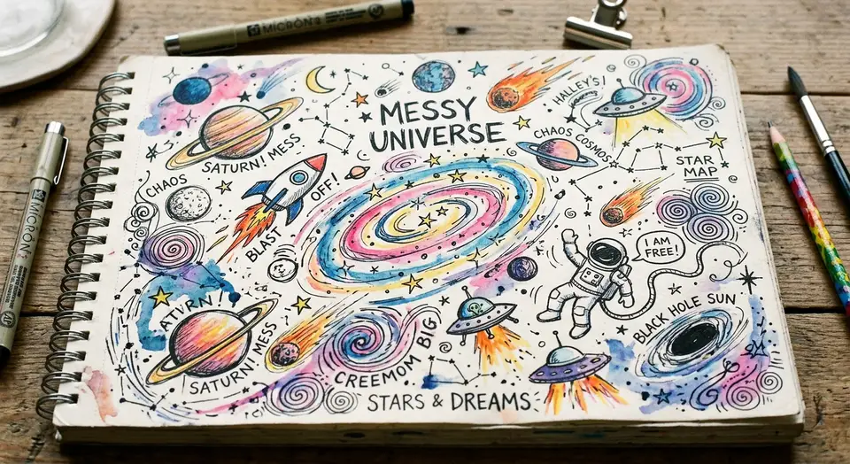

Why the Universe is Basically a Messy Room

Summary: Entropy is just the universe forgetting to do its chores.
Imagine your bedroom. You clean it. It looks nice. Two days later, there is a sock on the lamp. How? That is entropy.
The Second Law of Thermodynamics says that everything tends toward disorder. Basically, the universe is a teenager who refuses to hang up their coat. It's not your fault your life is chaotic; it's physics.
Comments Archive
User123: This explains my kitchen floor. Thanks.
SmartyPants: Actually, entropy is more about energy states...
User123: Shhh, I like the stick figures better.
-- Comments Closed because people keep arguing about cereal --